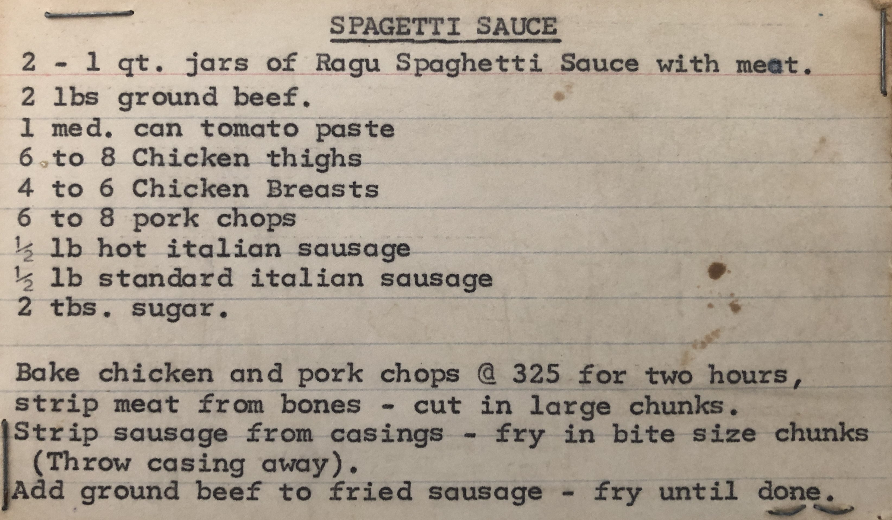
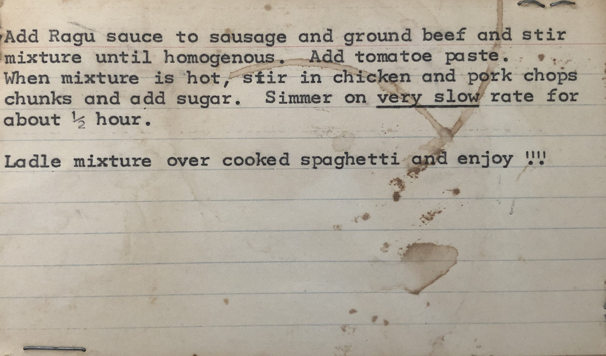

Polly's Spaghetti Sauce Recipe


Description
My grandma Polly used to make this spaghetti sauce recipe.
Ingredients:
- 2 - 1 quart jars of Ragu Spaghetti Sauce with meat
- 2 pounds ground beef
- 1 medium can tomato paste
- 6 chicken thighs
- 4 chicken breasts
- 6 pork chops
- 0.5 pound hot italian sausage
- 0.5 pound standard italian sausage
- 2 tablespoons sugar
Steps
- Bake chicken and pork chops @ 325F for two hours.
- Strip meat from bones - cut in large chunks.
- Strip sausage from casings - fry in bite size chunks (throw casing away).
- Add ground beef to fried sausage - fry until done.
- Add Ragu sauce to sausage and ground beef and stir mixture until homogenous.
- Add tomatoes and pork chops chunks and add sugar.
- Simmer on very slow rate for about 0.5 hour
- Ladle mixture over cooked spaghetti and enjoy!!